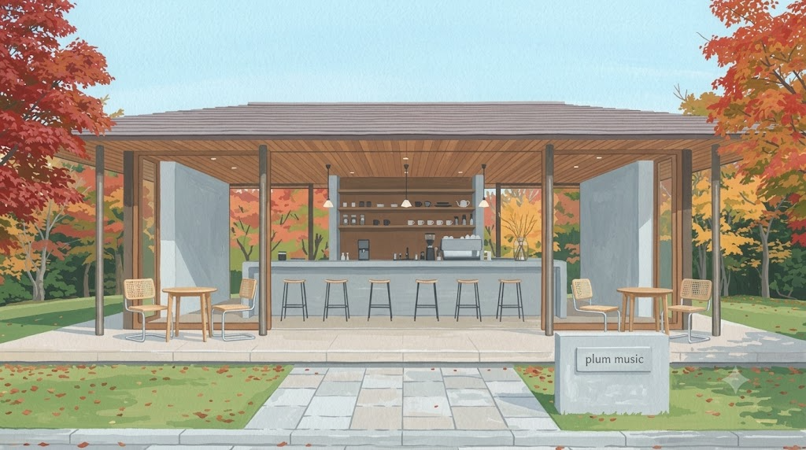
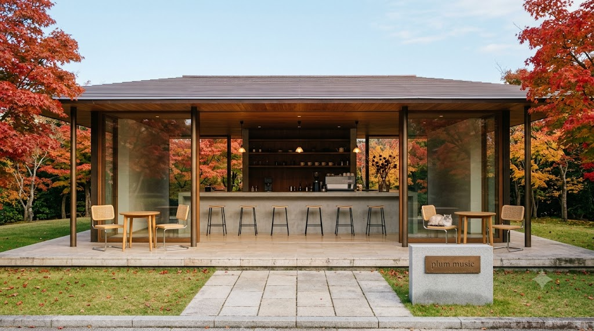
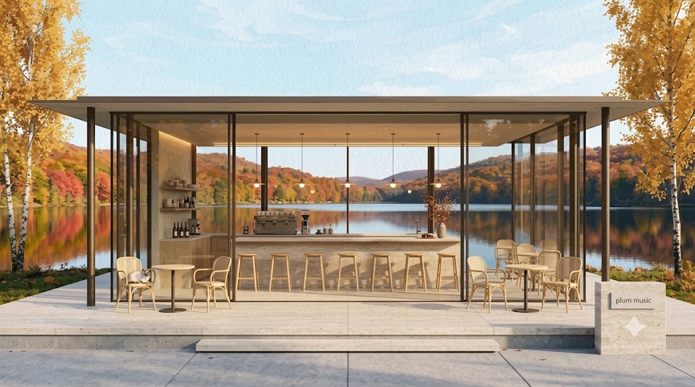
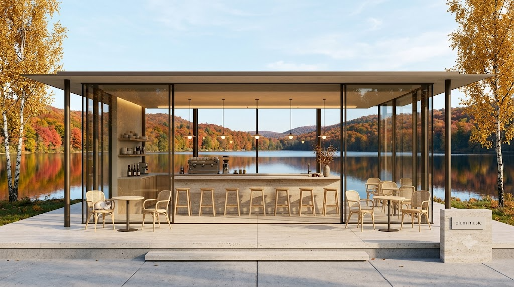
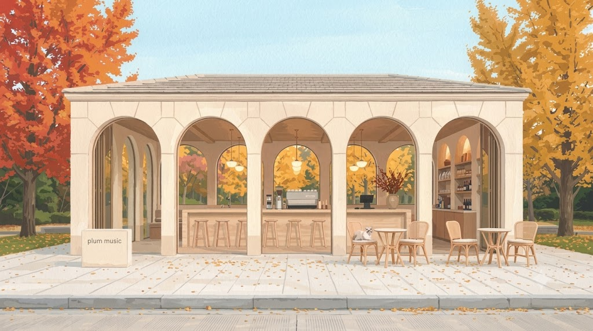
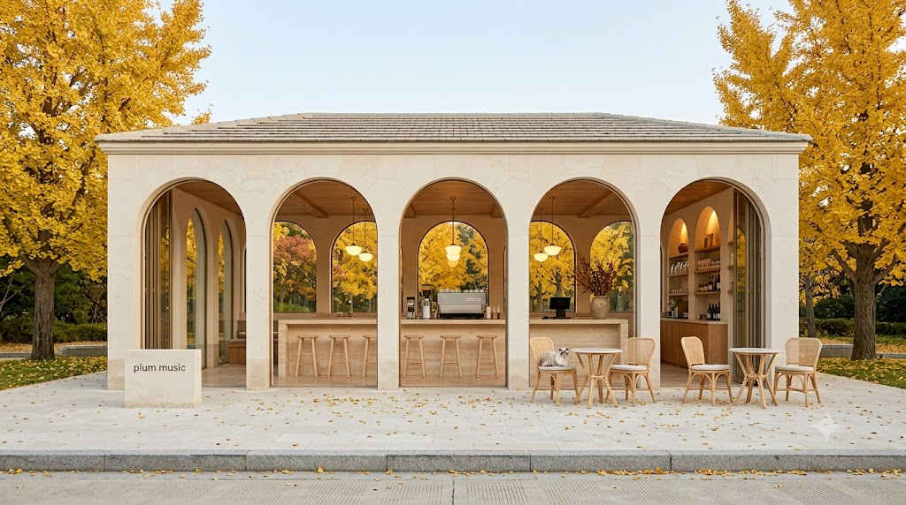
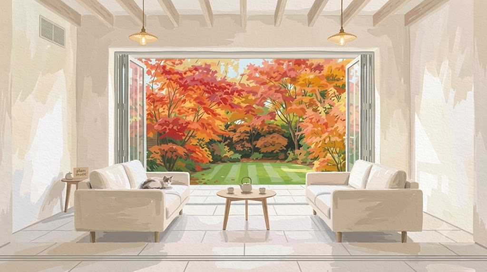
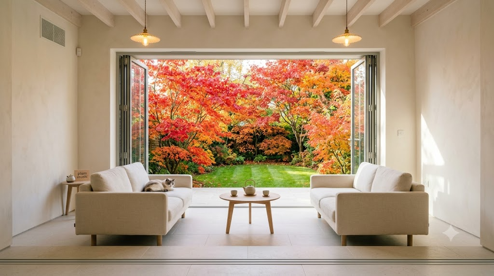

발행 09-18(금) 08:00 · 가을 전환 첫 편 · 마음에 드는 안의 알파벳만 알려주세요. 작은 사진은 재도색 전 실사 원본입니다.
외관 · 붉은 단풍 정원 속 개방 파빌리온 · 관통해 단풍 숲이 보임


실사 원본외관 · 잔잔한 호수와 단풍 산이 유리 너머로 · 좌우 금빛 자작나무


실사 원본외관 · 크림 석조 아치 5칸 · 좌우 노란 은행나무 · 아치 너머 은행 정원


실사 원본실내 · EP11·12 실내 연속 · 활짝 열린 통창 너머 붉은 단풍 정원


실사 원본